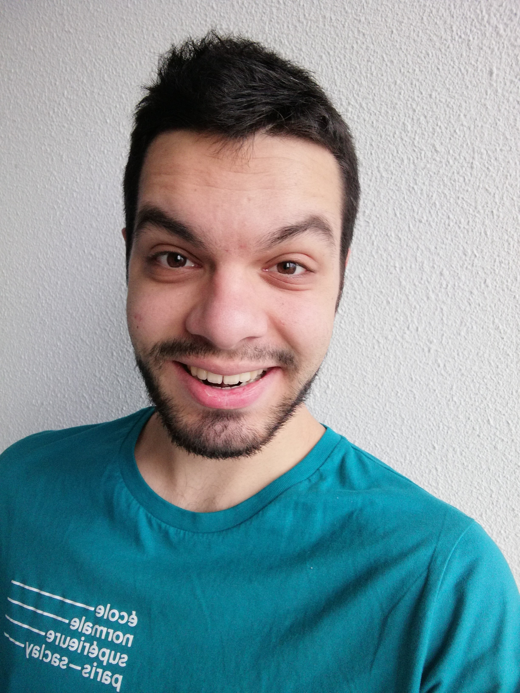

I am a French master student in computer science at ENS Paris-Saclay (MPRI). I also took some linguistics courses at different universities. As a computational linguist, I am specialized in the formal study of natural language models, espacially for syntax and the syntax-semantics interface (e.g. categorial grammars).
Contact
valentin.richard at ens-paris-saclay dot fr
Research interests
- Natural Language Syntax (from a linguistic or computational viewpoint)
- Logic
- Category theory
How to pronounce my name
- English equivalent "Valentine" /ˈvæləntaɪn ˈritʃərd/
- French exact pronounciation [valɒ̃ˈt̪æ̃], [valɒ̃tæ̃ ʁiˈʃaːʁ]
Some links
News
- October 2019 - August 2020: Internship at Utrecht Institute of Linguistics OTS, Utrecht Universiteit under the supervision of Michael Moortgat on Semantics of extended Lambek calculus.